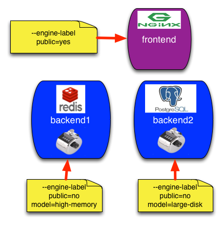

Bringing up your own cluster has never been easier. The recent 1.0 release of Docker Swarm signals that the Docker team feel that Swarm is ready for production.
I've been running a bunch of applications on Docker for a while now, but I have managed the containers on the single machine level instead of as a cluster. With the release of Swarm 1.0, I believe it is time to start clustering my machines.
How to spin up a Swarm for development is described well in the Docker documentation and I'm not going to describe it in depth here. I'll settle for the commands and extra documentation when I feel that it may be called for.
I'm using the Swarm for development with VirtualBox here, but it is simple to substitute any of the supported docker-machine providers.
Create a token with the Docker Hub discovery service. When running this in production you should probably setup an alternate discovery backend to avoid the external dependency.
# Create and save a token, using the Docker-Hub discovery service, default $ token=$(docker run swarm create)
The swarm manager will be used to control the swarm. It should be protected
from access from anyone but you. I'll simulate this here by setting
--engine-label public=no. This is just a tag and you would have to make sure
that you setup the manager protected from public access. It is possible to use
multiple labels to tag the engine with all the qualities of this machine.
# Create a swarm manager using the token $ docker-machine create \ -d virtualbox \ --swarm \ --swarm-master \ --swarm-discovery token://$token \ --engine-label public=no \ swarm-master
In this demo I'm only spinning up another VirtualBox machine and I'm giving it
the --engine-label public=yes to allow me to discover this box in the swarm.
# Create a new node named frontend and label it public $ docker-machine create \ -d virtualbox \ --swarm \ --swarm-discovery token://$token \ --engine-label public=yes \ frontend
Here I start a couple of machines with an additional --engine-label.
One with model=high-memory and one with model=large-disk
$ docker-machine create \ -d virtualbox \ --swarm \ --swarm-discovery token://$token \ --engine-label public=no \ --engine-label model=high-memory \ backend1
$ docker-machine create \ -d virtualbox \ --swarm \ --swarm-discovery token://$token \ --engine-label public=no \ --engine-label model=large-disk \ backend2
# List your machines $ docker-machine ls NAME ACTIVE DRIVER STATE URL SWARM backend1 - virtualbox Running tcp://192.168.99.103:2376 swarm-master backend2 - virtualbox Running tcp://192.168.99.104:2376 swarm-master frontend - virtualbox Running tcp://192.168.99.102:2376 swarm-master swarm-master - virtualbox Running tcp://192.168.99.101:2376 swarm-master (master)
Configure the docker client to connect to it.
# List the environment needed to connect to the swarm $ docker-machine env --swarm swarm-master export DOCKER_TLS_VERIFY="1" export DOCKER_HOST="tcp://192.168.99.101:3376" export DOCKER_CERT_PATH="/Users/andersjanmyr/.docker/machine/machines/swarm-master" export DOCKER_MACHINE_NAME="swarm-master" # Run this command to configure your shell: # eval "$(docker-machine env --swarm swarm-master)" # Configure docker to use the swarm-master $ eval $(docker-machine env --swarm swarm-master) # List information about the cluster $ docker info Containers: 4 Images: 3 Role: primary Strategy: spread Filters: health, port, dependency, affinity, constraint Nodes: 3 backend1: 192.168.99.103:2376 Containers: 1 Reserved CPUs: 0 / 1 Reserved Memory: 0 B / 1.021 GiB Labels: executiondriver=native-0.2, kernelversion=4.1.12-boot2docker, model=high-memory, operatingsystem=Boot2Docker 1.9.0 (TCL 6.4); master : 16e4a2a - Tue Nov 3 19:49:22 UTC 2015, provider=virtualbox, public=no, storagedriver=aufs frontend: 192.168.99.102:2376 Containers: 1 Reserved CPUs: 0 / 1 Reserved Memory: 0 B / 1.021 GiB Labels: executiondriver=native-0.2, kernelversion=4.1.12-boot2docker, operatingsystem=Boot2Docker 1.9.0 (TCL 6.4); master : 16e4a2a - Tue Nov 3 19:49:22 UTC 2015, provider=virtualbox, public=yes, storagedriver=aufs swarm-master: 192.168.99.101:2376 Containers: 2 Reserved CPUs: 0 / 1 Reserved Memory: 0 B / 1.021 GiB Labels: executiondriver=native-0.2, kernelversion=4.1.12-boot2docker, operatingsystem=Boot2Docker 1.9.0 (TCL 6.4); master : 16e4a2a - Tue Nov 3 19:49:22 UTC 2015, provider=virtualbox, public=no, storagedriver=aufs CPUs: 3 Total Memory: 3.064 GiB Name: fa2d554280ff
Now it is time to start the containers. The plan is to bring up two database containers, Postgres and Redis, two counter web-services, and one proxy to front the whole cluster, like this.

Alright let's start some containers!
According to the picture above I want to put the
Redis container on the machine named
backend1, but I don't want to address it by name, instead I'm going to target
it by its labels.
I also want to start a Postgres container on a machine with a large-disk model.
# Start Redis on a non-public machine with high-memory. $ docker run -d --name redis \ --env constraint:public!=yes \ --env constraint:model==high-memory \ redis
In this case, constraint:public!=yes is not needed but I like to add it to
avoid mistakes.
# Start Postgres on a non-public machine with large-disk $ docker run -d --name postgres \ --env constraint:public!=yes \ --env constraint:model==large-disk \ postgres
If this was not a VirtualBox machine I would also mount a volume,
-v /var/pgdata:/var/lib/postgresql/data, for the database, but this does not work
with VirtualBox.
OK, let's see what we have.
# List running containers, output slightly trimmed $ docker ps CONTAINER ID IMAGE COMMAND PORTS NAMES aa1679b3da5c postgres "/docker-entrypoint.s" 5432/tcp backend2/postgres ffa41d90f414 redis "/entrypoint.sh redis" 6379/tcp backend1/redis
Nice, two running databases on the designated machines.
Nginx is one of my favorite building blocks when it comes to building reliable web services. Nginx provides an official Docker image, but in this case, when I want to automatically configure Nginx when new containers are started, I prefer to use an alternative image called nginx-proxy.
A container started from the nginx-proxy image, listens to events generated
by the docker engine. The engine generates events for all kinds of
events
but all we care about here is when a container is started and stopped. If you
want to see what events are triggered from the CLI, run docker events in one
terminal and start and stop a few containers in another.
When nginx-proxy receives an event that a container has been started it checks
if the container has any ports EXPOSEd, if it does it also checks for a
VIRTUAL_HOST environment variable. If both these conditions are fulfilled
nginx-proxy re-configures its Nginx server and reloads the configuration.
When you now access the VIRTUAL_HOST, Nginx proxies the connection to your web service. Cool!
Naturally, you will have to configure your DNS to point to your Nginx server. The easiest way to do this is to configure with a wildcard record. Something like this:
*.mysite.com Host (A) Default xxx.xxx.xxx.xxx
In this case, we are using VirtualBox and we can settle for changing the
/etc/hosts file with the IP-number of our frontend.
# /etc/hosts redis-counter.docker 192.168.99.102 postgres-counter.docker 192.168.99.102
The cool thing is that events works with Swarm so it is possible to use the
nginx-proxy to listen to services that are started on different machines. All
we have to do is configure it correctly.
nginx-proxy is started with configuration read from the docker client
environment variables.
# Start nginx-proxy configured to listen to swarm events. $ docker run -d --name nginx \ -v $DOCKER_CERT_PATH:$DOCKER_CERT_PATH \ -p "80:80" \ --env constraint:public==yes \ --env DOCKER_HOST \ --env DOCKER_CERT_PATH \ --env DOCKER_TLS_VERIFY \ jwilder/nginx-proxy
OK, we are almost done. Now it is time to start the web services.
As a web service I'm going to use a
simple counter image
it connect to both Postgres and Redis. I want to start the web services on the
same server as the databases since this allows me to use --link to connect to
the container and it will speed up the data access. To do this I can use
an affinity constraint: --env affinity:container==*redis*
# Start a counter close to the container named redis and link to it. $ docker run -d --name redis-counter \ -p 80 \ --link redis \ --env affinity:container==*redis* \ --env REDIS_URL=redis:6379 \ --env VIRTUAL_HOST=redis-counter.docker \ andersjanmyr/counter
And finally, lets start the postgres-counter.
# Start a counter close to the container named postgres and link to it. $ docker run -d --name postgres-counter \ -p 80 \ --link postgres \ --env affinity:container==*postgres* \ --env POSTGRES_URL=postgres://postgres@postgres \ --env VIRTUAL_HOST=postgres-counter.docker \ andersjanmyr/counter
Browser to http://redis-counter.docker or http:/postgres-counter.docker and
you should see your services up and running.
Here's an illustration of our current setup:

And here is a listing of all the containers on their respective machines.
$ docker ps CONTAINER ID IMAGE COMMAND PORTS NAMES b3869a89e76c andersjanmyr/counter "/counter-linux" 192.168.99.104:32768->80/tcp backend2/postgres-counter cff69b6f970d andersjanmyr/counter "/counter-linux" 192.168.99.103:32768->80/tcp backend1/redis-counter 64af31135c26 jwilder/nginx-proxy "/app/docker-entrypoi" 443/tcp, 192.168.99.102:80->80/tcp frontend/nginx aa1679b3da5c postgres "/docker-entrypoint.s" Up 59 minutes 5432/tcp backend2/postgres,backend2/postgres-counter/postgres ffa41d90f414 redis "/entrypoint.sh redis" 6379/tcp backend1/redis,backend1/redis-counter/redis
Enjoy the Swarm!